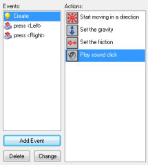
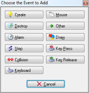
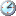
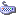
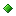
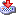
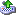

In the middle of the object property form there is a list of events to which the object must react. Initially it is empty. You can add events to it by pressing the button labeled Add Event. A form will appear with all different types of events. Here you select the event you want to add. Sometimes a menu pops up with extra choices. For example, for the keyboard event you must select the key. Below you find a complete list of the different events plus descriptions. One event in the list will be selected. This is the event we are currently changing. You can change the selected event by clicking on it. At the right there are all the actions represented by little icons. They are grouped in a number of tabbed pages. In the next chapter you will find descriptions of all the actions and what they do. Between the events and the actions there is the action list. This list contains the actions that must be performed for the current event. To add actions to the list, drag them with your mouse from the right to the list. They will be placed below each other, with a short description. For each action you will be asked to provide a few parameters. These will also be described in the next chapter. So after adding a few actions the situation might look as follows:

Now you can start adding actions to another event. Click on the correct event with the left mouse button to select it and drag actions in the list.
You can change the order of the actions in the list again using drag-and-drop. If you hold the <Alt> key while dragging, you make a copy of the action. You can even use drag-and-drop between action lists for different objects. When you click with the right mouse button on an action, a menu appears in which you can delete the selected action (can also be done by using the <Del> key) or copy and paste actions. (You can select multiple actions for cutting, copying, or deleting by holding the <Shift> key of <Ctrl> key. Press <Ctrl><A> to select all actions.) When you hold your mouse at rest above an action, a longer description is given of the action. See the next chapter for more information on actions.
To delete the currently selected event together with all its actions press the button labeled Delete. (Events without any actions will automatically be deleted when you close the form so there is no need to delete them manually.) If you want to assign the actions to a different event (for example, because you decided to use a different key for them) press the button labeled Change and pick the new event you want. (The event should not be defined already!) Using the menu that pops up when right-clicking on the event list, you can also duplicate an event, that is, add a new event with the same actions.
As indicated above, to add an event, press the button Add Event. The following form pops up:

Here you select the event you want to add. Sometimes a menu pops up with extra choices. Here is a description of the various events. (Again remember that you normally use only a few of them.)
Create event
This event happens when an instance of the object is created. It is normally used to
set the instance in motion and/or to set certain variables for the instance.
Destroy event
This event happens when the instance is destroyed. To be precise, it happens just
before it is destroyed, so the instance does still exist when the event is executed!
Most of the time this event is not used but you can for example use it to change the score or
to create some other object.
 Alarm events
Each instance has 12 alarm clocks.
You can set these alarm clocks using certain actions
(see next chapter). The alarm clock then ticks down until it reaches 0 at which moment
the alarm event is generated. To indicate the actions for a given alarm clock, you
first need to select it in the menu. Alarm clocks are very useful. You can use them to
let certain things happen from time to time. For example a monster can change its
direction of motion every 20 steps. (In such cases one of the actions in the event
must set the alarm clock again.)
Step events
The step event happens every step of the game. Here you can put actions that need to
be executed continuously. For example, if one object should follow another, here you
can adapt the direction of motion towards the object we are following. Be careful with
this event though. Don't put many complicated actions in the step event of objects of
which there are many instances. This might slow the game down. To be more precise,
there are three different step events. Normally you only need the default one. But
using the menu you can also select the begin step event and the end step event. The
begin step event is executed at the beginning of each step, before any other events
take place. The normal step event is executed just before the instances are put in
their new positions. The end step event is executed at the end of the step, just
before the drawing. This is typically used to change the sprite depending on
the current direction.
Collision events
Whenever two instances collide (that is, their sprites overlap) a collision event
appears. Well, to be precise two collision event occur; one for each instance. The
instance can react to this collision event. To this end, from the menu select the
object with which you want to define the collision event. Next you place the actions
here.
There is a difference in what happens when the instance collides with a solid object or a non-solid object. First of all, when there are no actions in the collision event, nothing happens. The current instance simply keeps on moving; even when the other object is solid. When the collision event contains actions the following happens:
When the other object is solid, the instance is placed back at its previous place (before the collision occurs). Then the event is executed. Finally, the instance is moved to its new position. So if the event e.g. reverses the direction of motion, the instance bounces against the wall without stopping. If there is still a collision, the instance is kept at its previous place. So it effectively stops moving.
When the other object is not solid, the instance is not put back. The event is simply executed with the instance at its current position. Also, there is no second check for a collision. If you think about it, this is the logical thing that should happen. Because the object is not solid, we can simply move over it. The event notifies us that this is happening.
There are many uses for the collision event. Instances can use it to bounce against walls. You can use it to destroy objects when, for example, they are hit by a bullet.
 Keyboard events
When the player presses a key, a keyboard event happens for all instances of all
objects. There is a different event for each key. In the menu you can pick the key for
which you want to define the keyboard event and next drag actions there. Clearly, only
a few objects need events for only a few keys. You get an event in every step as long
as the player keeps the key depressed. There are two special keyboard events. One is called
<No key>. This event happens in each step when no key is pressed. The second one
is called <Any key> and happens whatever key is pressed. When the player
presses multiple keys, the events for all the keys pressed happen. Note that the keys
on the numeric keypad only produce the corresponding events when <NumLock> is
pressed.
Mouse events
A mouse event happens for an instance whenever the mouse cursor lies inside the sprite
representing the instance. Depending on which mouse buttons are pressed you get the no
button, left button, right button, or middle button event. The mouse button events are
generated in each step as long as the player keeps the mouse button pressed. The press
events are only generated once when the button is pressed. The release events are only
generated when the button is released. Note that these events only occur when the
mouse is above the instance. If you want to react to mouse press or release events at
an arbitrary place, use the global mouse events that can be found in a submenu. There are
two special mouse events. The mouse enter event happens when the mouse enters the
instance. The mouse leave event happens when the mouse leaves the instance. These
events are typically used to change the image or play some sound.
Mouse wheel up and mouse wheel down events happen when the user moves the mouse wheel.
Finally there are a
number of events related to the joystick. You can indicate actions for the four main
directions of the joystick (in a diagonal direction both events happen). Also you can
define actions for up to 8 joystick buttons. You can do this both for the primary
joystick and the secondary joystick.
 Other events
There are a number of other events that can be useful in certain games. They are found
in this menu. The following events can be found here:
Draw event
Instances, when visible, draw their sprite in each step on the screen. When you
specify actions in the drawing event, the sprite is not drawn, but these actions are
executed instead. This can be used to draw something other than the sprite, or first
make some changes to sprite parameters. There are a number of drawing actions that are
especially meant for use in the drawing event. Note that the drawing event is only
executed when the object is visible. Also note that, independent of what you draw,
collision events are based on the sprite that is associated with the instance.
 Key Press events
This event is similar to the keyboard event but it happens only once when the key
is pressed, rather than continuously. This is useful when you want an action to
happen only once.
 Key Release events
This event is similar to the keyboard event but it happens only once
when the key is released, rather than continuously.
In some situation it is important to understand the order in which Game Maker processes the events. This is as follows:
The create, destroy, and other events are performed when the corresponding things happen.